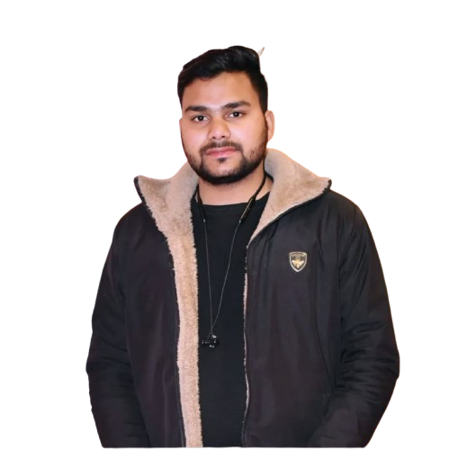

Maurya Jan Seva Kendra is a multi-service center dedicated to empowering citizens through accessible government services and professional photography. Located in Bharawan, Hardoi, we combine technology, trust, and creativity to simplify everyday needs—from Aadhaar updates to event photography. Founded by Deepak Maurya, our center has been serving the community for several years, building a reputation for reliability and excellence in both administrative services and creative endeavors.
We understand the challenges faced by individuals in navigating government procedures and capturing life's precious moments. That's why we've created a one-stop solution that handles everything from document processing to professional photo shoots, ensuring convenience and quality in every service we provide.
To provide seamless, efficient, and trustworthy services that empower individuals and businesses in our community. We strive to bridge the gap between citizens and essential services, making complex processes simple and accessible to all.
To be the leading multi-service center in Hardoi district, recognized for our commitment to excellence, innovation, and community service. We envision a future where technology and personal touch come together to create unparalleled service experiences.
We’re officially recognized to deliver government services like PAN, voter ID, and more.
Our streamlined process ensures fast turnaround and minimal hassle.
We prioritize your experience with friendly staff and personalized support.

Founder & Operator
With a passion for service and community, Deepak brings professionalism and care to every interaction. As a dedicated entrepreneur, he has extensive experience in both government services and photography, ensuring that every client receives top-notch assistance tailored to their needs.
At Maurya Jan Seva Kendra, we offer a comprehensive range of services to cater to your diverse needs:
We are committed to providing high-quality, reliable services with a personal touch.